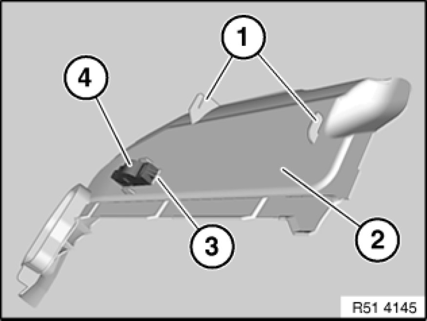

51 45 181 Removing and Installing/Replacing Bottom Right Trim For Instrument Panel
51 45 ... - Removing and installing/replacing bottom right trim for instrument panel

Note:
Move front passenger seat completely towards rear.
Press bottom right instrument panel trim (1) forwards slightly and feed downwards out of guides (2).
Disconnect associated plug connection and remove bottom right instrument panel trim (1).

Installation:
Attachments (1) on bottom right instrument panel trim (2) must not be damaged.
Replacement:
Press catches (3) and remove footwell light (4).